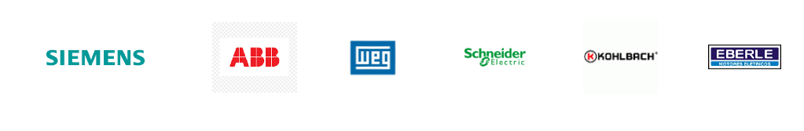

História da Empresa
Maas eletrotécnicateve seu inicio com um sonho de ter um empresa de manutenção. fiz um curso na escola argos no ano de 2013 e aprendi a realizar enrolamento de motores elétricos. no inicio foi dificil, maas hoje a Empresa está entre umas das melhores em manutenção. além de manutenção de motores elétricos fazemos também consertos de ferramentas elétricas de diversas marcas.
Assistência técnica ferramentas elétricas
Fazemos manutenção de diversas ferramentas elétricas : Furadeira , Serra marmore , Serra circular , martelete , Esmerilhadeira , Lixadeira , Plaina , Moto esmeril , Lavadoura de alta pressão etc....
Assistência técnica motores elétricos
Fazemos manutenção das melhores marcas de motores elétricos , orçamento com os melhores preços da região. retiramos e entregamos na sua empresa.

Fale com a Maas Eletrotécnica
Atendemos em toda região da grande São paulo
Fone : (11) 97573-8734